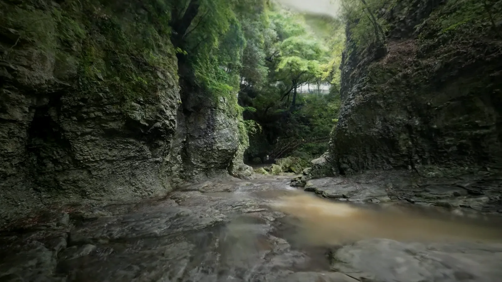
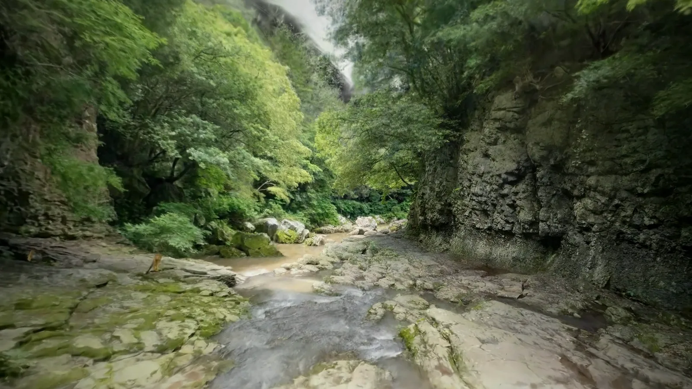
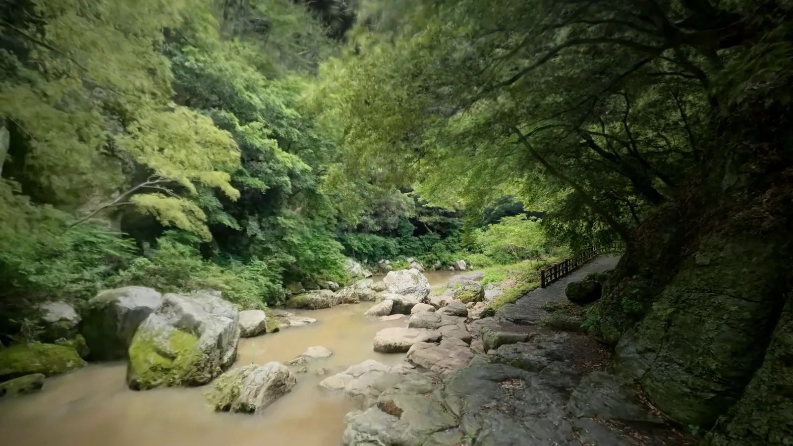
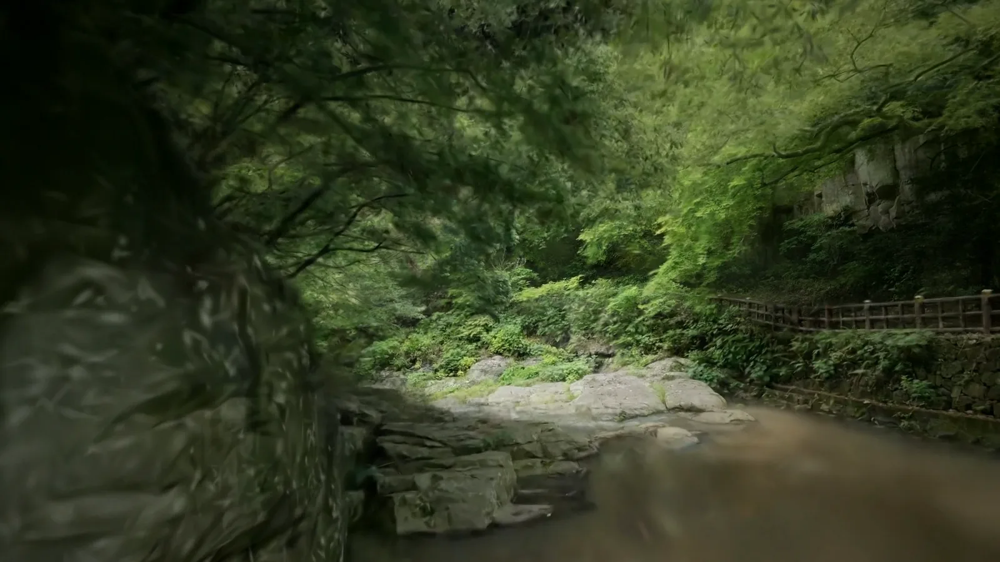
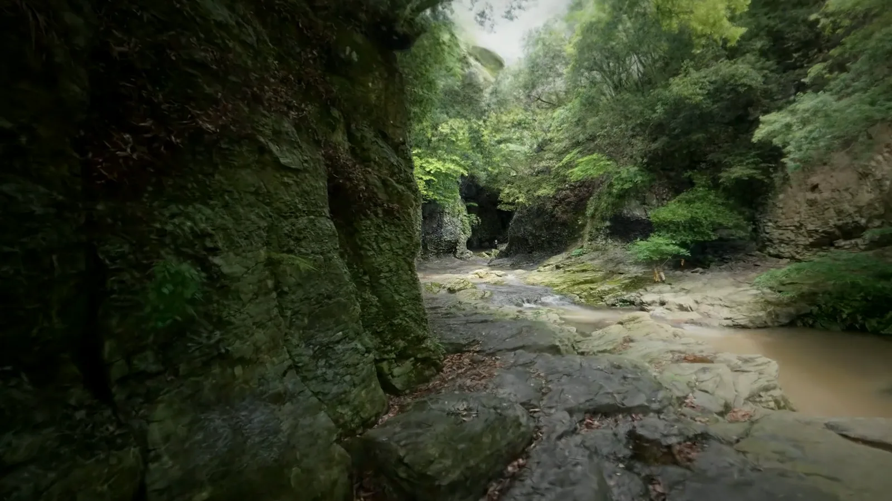
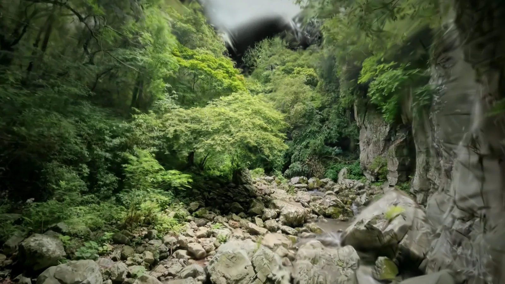
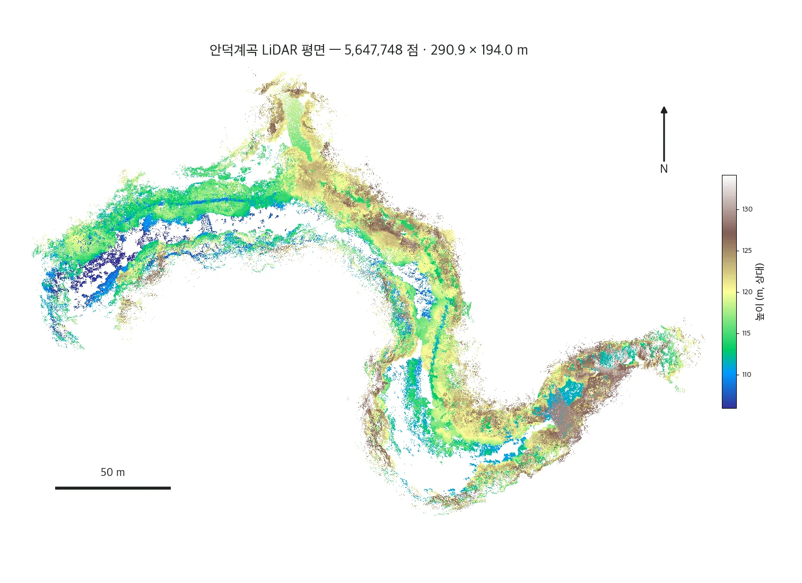

계곡 풍경 — 디지털 트윈에서






안덕계곡, 그리고 상록수림
안덕계곡은 서귀포시 안덕면에 있는 깊은 협곡입니다. 조면암질 용암이 오랜 세월 물에 깎여, 양옆으로 깎아지른 절벽이 서고 그 바닥으로 사철 맑은 물이 흐르는 계곡이 되었습니다.
계곡을 덮은 난대성 상록수림은 천연기념물 제377호로 지정돼 있습니다. 구실잣밤나무·조록나무·후박나무를 비롯해 수백 종의 식물이 자라고, 보기 드문 양치식물도 깃들어 있습니다. 예부터 선비들이 찾아 글을 남기던 자리이기도 합니다.
- 상록수림천연기념물 제377호 · 난대성 상록수림지대
- 절벽조면암 용암이 깎여 생긴 협곡
- 계류사철 맑은 물이 흐르는 계곡 바닥
- 식생수백 종의 식물 · 보기 드문 양치식물
이 영상은 어떻게 만들어졌나 — 3D 가우시안 스플랫
이 산책의 모든 장면은 생성된 그림이 아니라, 현장에서 담은 실제 안덕계곡입니다. 한 공간을 여러 각도에서 찍은 수많은 실제 사진으로, 그 공간을 통째로 되살리는 방식을 3D 가우시안 스플랫(3DGS)이라 합니다.
장면을 삼각형 면이 아니라, 색과 빛을 머금은 수백만 개의 작은 타원체 — ‘스플랫’으로 채웁니다. 보는 각도에 따라 빛과 질감이 자연스럽게 바뀌어, 사진처럼 선명하면서도 그 안을 카메라처럼 자유롭게 걸어 다닐 수 있습니다.
그래서 디지털 트윈은 한 장의 사진이 아니라, 들어가 걸을 수 있는 공간이 됩니다. 영상으로도, 체험으로도, 다시 태어납니다.
눈으로 걷는 트윈, 자로 재는 트윈
같은 안덕계곡을 raven LiDAR로도 통째로 떠, 절벽의 높이와 계곡의 단면을 자로 잰 듯 측정했습니다. 두 가지는 서로를 채웁니다.
가우시안 스플랫 · 보는 트윈
실제 사진으로 지어, 눈높이에서 걸어 들어가 둘러보는 디지털 트윈.

LiDAR 점군 · 재는 트윈
점군에서 절벽 높이·계곡 단면·거리를 직접 재는 측량·분석.
안덕계곡 측량 보기 →